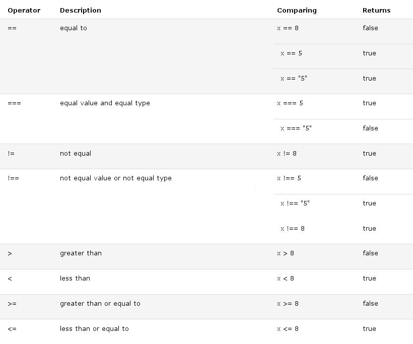

Comparison and Logical operators are used to test for true or false.
Comparison operators are used in logical statements to determine equality or difference between variables or values.
Given that x = 5, the table below explains the comparison operators:
Comparison operators can be used in conditional statements to compare values and take action depending on the result:
You will learn more about the use of conditional statements in the next chapter of this tutorial.
Logical operators are used to determine the logic between variables or values.
Given that x = 6 and y = 3, the table below explains the logical operators:
JavaScript also contains a conditional operator that assigns a value to a variable based on some condition.
If the variable age is a value below 18, the value of the variable voteable will be "Too young", otherwise the value of voteable will be "Old enough".
Comparing data of different types may give unexpected results.
When comparing a string with a number, JavaScript will convert the string to a number when doing the comparison. An empty string converts to 0. A non-numeric string converts to NaN which is always false.
When comparing two strings, "2" will be greater than "12", because (alphabetically) 1 is less than 2.
To secure a proper result, variables should be converted to the proper type before comparison: